Role: Lead Concept, Designer & Front-End Developer
Tools: Illustrator, Sketch
Languages Explored: HTML 5, CSS, Sass, Haml, Ruby on Rails
Awards: Hack Bushwick Crowd Favorite App
Press: Technical.Ly Brooklyn, Brooklyn Paper
This is an ongoing project and the github repo can be found here.
Oh Hey is the passive romantic's answer to online dating. Modeled to capture the wistful sentiment of a Cragislist Missed Connection, it's a romantic way to reach out into the vast sea of human hearts and see if anyone answers back.
The focus of the project was creating a web application as quickly as we could. We built the project primarily for an in-browser experience, but with a mobile-first strategy.
#60e4f5
#45f4b5
#ff5c64
#383838
Headlines
Paragraphs


Oh Hey explores the idea of the public forum. Most dating application activity exists in individual user-silos, unless two users are directly
messaging eachother. Oh Hey's reliance on the public post invites the user to sift, and engages a sense of romantic curiousity.
The hope of a user to see a message specifically for them drives them to search through the posts, but an amusement of public and anonymous displays of affection makes them stay. Even if none of the messages are for the user specifically during their visit, Oh Hey is a nice confirmation that the drive to seek romanticism is alive and well.
Oh-Hey utilizes the Google Maps API and posts are attached to locations through latitutde and longitudinal data. The posts can be searched through depending on the user's specifications.

Profile View

Home Page

Detailed Map View

Detailed Map View

One of the user pain-points of tyipcal dating apps is the barrage of messages you can possibly recieve, especially if you're a liberal right-swiper. Oh-Hey is more specific. To initiate a conversation in Oh Hey, you first have to overcome a verification question and answer that is decided on by the inital poster.
Message verifications provide a secure way for two people to begin engaging a conversation through Oh Hey, and also narrows the funnel in which you are contacted by a potential match. This would make instances of messaging much more rare, but raises the stakes of emotional payoff for each instance due to its rarity.
The web application uses a split-screen design, so that the full right side can display a broader view of the map. Where the mobile interface minimizes map interaction, the desktop version allows the user to browse through posts by clicking directly on the points on the map.